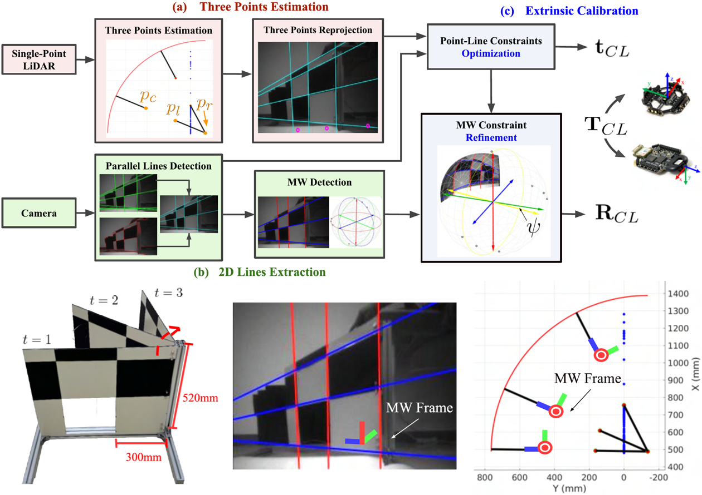
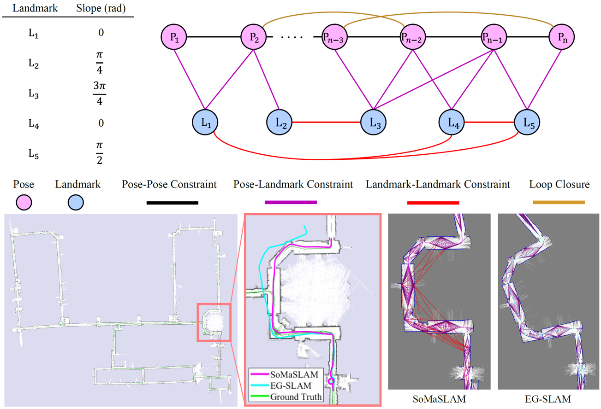
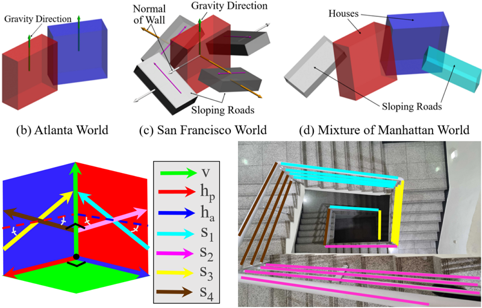

|
Minji Kim
I am an Master's student at the Gwangju Institute of Science and Technology (GIST), affiliated with the
Machine Perception and Intelligence Lab (MPIL) and the Department of Mechanical and Robotics Engineering, under the supervision of
Prof. Pyojin Kim.
My research focuses on 3D computer vision and robotics. Currently, I am working on lightweight indoor localization in extreme environments using limited sensors, and I am also interested in sensor calibration and multi-modal data fusion.
I am open to research collaborations and interested in internship or job opportunities. Please feel free to contact me via email.
Email /
CV /
Linkedin /
Github
|
|
|

|
SPLiCE: Single-Point LiDAR and Camera Calibration & Estimation Leveraging Manhattan World
Minji Kim,
Jeahn Han,
Jungil Ham,
Pyojin Kim*,
IEEE International Conference on Intelligent Robots and Systems (IROS), 2025
project page
/
Paper
|

|
SoMaSLAM: 2D Graph SLAM for Sparse Range Sensing with Soft Manhattan World Constraints
Jeahn Han,
Zichao Hu, Seonmo Yang,
Minji Kim,
Pyojin Kim*,
IEEE Robotics and Automation Letters (RA-L), 2025
project page
/
Paper
|

|
San Francisco World: Leveraging Structural Regularities of Slope for 3-DoF Visual Compass
Jungil Ham,
Minji Kim,
Suyoung Kang, Kyungdon Joo, Haoang Li,
Pyojin Kim*,
IEEE Robotics and Automation Letters (RA-L), 2024
project page
/
Paper
|
Education
-
M.S. in Mechanical and Robotics Engineering, Gwangju Institute of Science and Technology
Feb. 2024–Present
-
B.S. in Mechanical Engineering, Sookmyung Women's University
Mar. 2018–Feb. 2024
|
This template is a modification to Jon Barron's
website.
Feel free to clone it for your own use while attributing the original author
Jon Barron.
|
|
{kind=link}